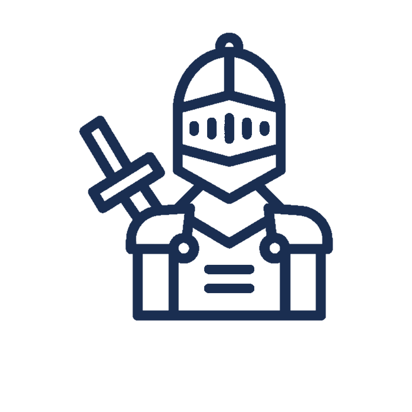

First Thread Post
A broad-shouldered knight in worn steel armor stood beneath the torchlight, his scarred helm tucked under one arm. He carried himself with a quiet sense of duty, the weight of old oaths pressing on him like the mail at his throat, and his eyes held both the memory of past battles and a stubborn hope for a better dawn. Though his gauntlets were stained with blood and sweat, he spoke with a steady voice that promised he would protect the weak and keep his word to the end.
#tag1 #tag2 #tag3